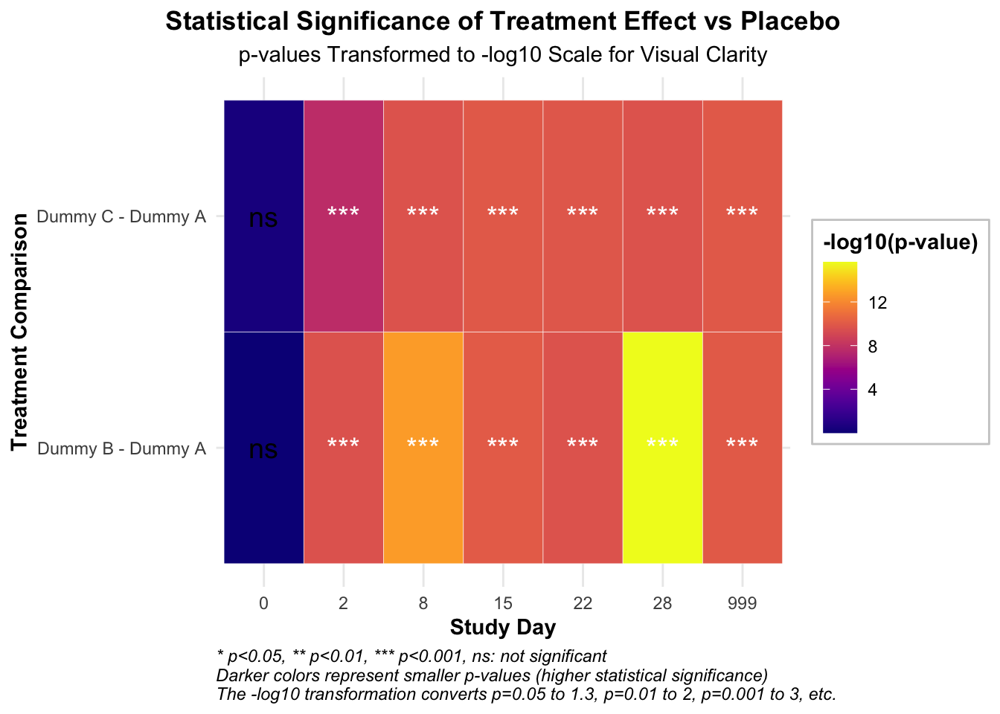

AVISITN = 28:
contrast estimate SE df t.ratio p.value
Dummy B - Dummy A -0.841 0.0992 651 -8.482 <.0001
Dummy C - Dummy A -0.798 0.0791 596 -10.098 <.0001
Results are averaged over the levels of: SEX, SITEID, RACE, base_situation
P value adjustment: dunnettx method for 2 tests
TRT01A AVISITN emmean SE df lower.CL upper.CL Time
16 Dummy A 28 -0.2659051 0.1290646 798.1815 -0.5192512 -0.01255906 28
17 Dummy B 28 -1.1072886 0.1571637 999.6623 -1.4156972 -0.79888004 28
18 Dummy C 28 -1.0642296 0.1466599 979.1475 -1.3520335 -0.77642572 28
# Day 28时的柱状图p1 <-ggplot(day28_df, aes(x = TRT01A, y = emmean, fill = TRT01A)) +geom_bar(stat ="identity", width =0.7, color ="black") +geom_errorbar(aes(ymin = emmean - SE, ymax = emmean + SE), width =0.2) +labs(title ="Change from Baseline in MADRS Total Score at Day 28",subtitle ="Estimated Marginal Means with Standard Errors",x ="Treatment Group",y ="Estimated Mean Change from Baseline",fill ="Treatment Group",caption ="Note: Error bars represent standard errors. Negative values indicate improvement in depressive symptoms." ) +scale_fill_viridis(discrete =TRUE, option ="D",labels =c("Placebo", "Esketamine 56 mg", "Esketamine 84 mg")) +theme_minimal() +theme(legend.position ="bottom",legend.background =element_rect(fill ="white", color ="grey80"),legend.title =element_text(face ="bold"),axis.title =element_text(face ="bold"),plot.title =element_text(hjust =0.5, face ="bold"),plot.subtitle =element_text(hjust =0.5),plot.caption =element_text(hjust =0, face ="italic"),axis.text.x =element_text(angle =0, hjust =0.5) ) +# 添加标签geom_text(aes(label =sprintf("%.1f", emmean)), position =position_dodge(width =0.7), vjust =-0.5, color ="black", fontface ="bold")# 输出绘图数据contrasts_day28_df
AVISITN = 28:
contrast estimate SE df t.ratio p.value
Dummy B - Dummy A -0.8413835 0.09919806 650.97 -8.482 <.0001
Dummy C - Dummy A -0.7983245 0.07905644 595.89 -10.098 <.0001
Results are averaged over the levels of: SEX, SITEID, RACE, base_situation
P value adjustment: dunnettx method for 2 tests
# 绘制治疗组vs安慰剂的差异图p2 <-ggplot(contrasts_day28_df, aes(x = contrast, y = estimate, fill = contrast)) +geom_bar(stat ="identity", width =0.7, color ="black") +geom_errorbar(aes(ymin = estimate - SE, ymax = estimate + SE), width =0.2) +labs(title ="Treatment Effect vs Placebo at Day 28",subtitle ="Difference in Estimated Means with Standard Errors",x ="Treatment Comparison",y ="Estimated Difference vs Placebo",fill ="Treatment Comparison",caption ="Note: Values below zero favor active treatment over placebo.\nRed dashed line represents no difference from placebo." ) +scale_fill_viridis(discrete =TRUE, option ="E",labels =c("Esketamine 56 mg vs Placebo", "Esketamine 84 mg vs Placebo")) +theme_minimal() +theme(legend.position ="bottom",legend.background =element_rect(fill ="white", color ="grey80"),legend.title =element_text(face ="bold"),axis.title =element_text(face ="bold"),plot.title =element_text(hjust =0.5, face ="bold"),plot.subtitle =element_text(hjust =0.5),plot.caption =element_text(hjust =0, face ="italic"),axis.text.x =element_text(angle =45, hjust =1) ) +geom_hline(yintercept =0, linetype ="dashed", color ="red") +# 添加p值和效应量标签geom_text(aes(label =sprintf("Diff: %.1f\np = %.3f", estimate, p.value)), position =position_dodge(width =0.7), vjust =-0.8, size =3.5)# 使用patchwork组合两个图library(patchwork)combined_plot <- p1 + p2 +plot_layout(ncol =2)combined_plot <- combined_plot +plot_annotation(title ="MADRS Score Change and Treatment Effect at Day 28",theme =theme(plot.title =element_text(hjust =0.5, face ="bold", size =16)))# 保存组合图ggsave("Day28_treatment_effect_with_legend.png", combined_plot, width =12, height =6, dpi =300)# 输出绘图数据contrasts_all_df
AVISITN = 0:
contrast estimate SE df t.ratio p.value Time
Dummy B - Dummy A 0.0017143 0.04113726 415.00 0.042 0.9972 0
Dummy C - Dummy A 0.0494328 0.04177930 415.89 1.183 0.3944 0
AVISITN = 2:
contrast estimate SE df t.ratio p.value Time
Dummy B - Dummy A -0.6929711 0.07475349 588.39 -9.270 <.0001 2
Dummy C - Dummy A -0.5341834 0.09229578 670.43 -5.788 <.0001 2
AVISITN = 8:
contrast estimate SE df t.ratio p.value Time
Dummy B - Dummy A -0.6956335 0.09261148 668.33 -7.511 <.0001 8
Dummy C - Dummy A -0.7727962 0.07955698 595.88 -9.714 <.0001 8
AVISITN = 15:
contrast estimate SE df t.ratio p.value Time
Dummy B - Dummy A -0.7412707 0.09620677 508.54 -7.705 <.0001 15
Dummy C - Dummy A -0.7891862 0.09702519 515.94 -8.134 <.0001 15
AVISITN = 22:
contrast estimate SE df t.ratio p.value Time
Dummy B - Dummy A -0.8409304 0.07877781 589.92 -10.675 <.0001 22
Dummy C - Dummy A -0.6454649 0.09907534 656.61 -6.515 <.0001 22
AVISITN = 28:
contrast estimate SE df t.ratio p.value Time
Dummy B - Dummy A -0.8413835 0.09919806 650.97 -8.482 <.0001 28
Dummy C - Dummy A -0.7983245 0.07905644 595.89 -10.098 <.0001 28
AVISITN = 999:
contrast estimate SE df t.ratio p.value Time
Dummy B - Dummy A -0.7011922 0.09474272 512.36 -7.401 <.0001 999
Dummy C - Dummy A -0.8010667 0.09530024 514.97 -8.406 <.0001 999
Results are averaged over the levels of: 1 nuisance factors, SEX, SITEID, base_situation
P value adjustment: dunnettx method for 2 tests
# 创建森林图展示各时间点的治疗效果ggplot(contrasts_all_df, aes(x = AVISITN, y = estimate, color = contrast)) +geom_point(size =3) +geom_errorbar(aes(ymin = estimate - SE*1.96, ymax = estimate + SE*1.96), width =0.2) +geom_line(aes(group = contrast), linewidth =1) +geom_hline(yintercept =0, linetype ="dashed", color ="red") +facet_wrap(~ contrast, ncol =1) +labs(title ="Treatment Effect vs Placebo Over Time",subtitle ="Estimated Differences with 95% Confidence Intervals",x ="Study Day",y ="Estimated Difference vs Placebo",color ="Treatment Comparison",caption =paste("Note: Points below zero favor active treatment over placebo.","Error bars represent 95% confidence intervals.","Non-overlapping confidence intervals with red dashed line (zero) indicate statistical significance.") ) +scale_color_viridis(discrete =TRUE, option ="D",labels =c("Esketamine 56 mg vs Placebo", "Esketamine 84 mg vs Placebo")) +theme_minimal() +theme(legend.position ="bottom",legend.background =element_rect(fill ="white", color ="grey80"),legend.title =element_text(face ="bold"),strip.background =element_rect(fill ="lightgrey"),strip.text =element_text(face ="bold"),axis.title =element_text(face ="bold"),plot.title =element_text(hjust =0.5, face ="bold"),plot.subtitle =element_text(hjust =0.5),plot.caption =element_text(hjust =0, face ="italic") ) +# 添加p值标签geom_text(aes(label =sprintf("p = %.3f", p.value)), position =position_dodge(width =0.5), vjust =-0.8, color ="black", size =3)
Time contrast p.value sig neg_log10_p
1 0 Dummy B - Dummy A 9.971599e-01 ns 0.001235183
2 0 Dummy C - Dummy A 3.943676e-01 ns 0.404098792
3 2 Dummy B - Dummy A 2.484033e-10 *** 9.604842643
4 2 Dummy C - Dummy A 2.131253e-08 *** 7.671365020
5 8 Dummy B - Dummy A 1.882938e-13 *** 12.725163922
6 8 Dummy C - Dummy A 2.354221e-10 *** 9.628152722
7 15 Dummy B - Dummy A 8.864287e-11 *** 10.052356187
8 15 Dummy C - Dummy A 1.091197e-10 *** 9.962096784
9 22 Dummy B - Dummy A 2.467375e-10 *** 9.607764806
10 22 Dummy C - Dummy A 1.448419e-10 *** 9.839105738
11 28 Dummy B - Dummy A 2.220446e-16 *** 15.653559775
12 28 Dummy C - Dummy A 2.352738e-10 *** 9.628426432
13 999 Dummy B - Dummy A 1.000091e-10 *** 9.999960428
14 999 Dummy C - Dummy A 1.063928e-10 *** 9.973087829
# 绘制p值热图ggplot(p_values_long, aes(x =factor(Time), y = contrast, fill =-log10(p.value))) +geom_tile(color ="white") +# 根据显著性调整文本颜色geom_text(aes(label = sig, color =ifelse(p.value <0.05, "white", "black")), size =5) +# 手动设置文本颜色scale_color_identity() +# 设置小p值(高-log10(p值))为深色scale_fill_viridis(option ="C", name ="-log10(p-value)", direction =1) +labs(title ="Statistical Significance of Treatment Effect vs Placebo",subtitle ="p-values Transformed to -log10 Scale for Visual Clarity",x ="Study Day",y ="Treatment Comparison",caption =paste("* p<0.05, ** p<0.01, *** p<0.001, ns: not significant","Darker colors represent smaller p-values (higher statistical significance)","The -log10 transformation converts p=0.05 to 1.3, p=0.01 to 2, p=0.001 to 3, etc.", sep ="\n") ) +theme_minimal() +theme(axis.title =element_text(face ="bold"),plot.title =element_text(hjust =0.5, face ="bold"),plot.subtitle =element_text(hjust =0.5),plot.caption =element_text(hjust =0, face ="italic"),legend.position ="right",legend.title =element_text(face ="bold"),legend.background =element_rect(fill ="white", color ="grey80") )

# 保存热图ggsave("Treatment_significance_heatmap_with_legend.png", width =10, height =6, dpi =300)# 创建模型诊断图# 提取残差residuals <-residuals(fit)fitted_values <-fitted(fit)# 创建诊断数据框diag_df <-data.frame(Fitted = fitted_values,Residuals = residuals)# 为QQ图准备数据qq_data <-qqnorm(residuals, plot.it =FALSE)qq_df <-data.frame(Theoretical = qq_data$x, Sample = qq_data$y)# 绘制残差图p3 <-ggplot(diag_df, aes(x = Fitted, y = Residuals)) +geom_point(alpha =0.5, color ="blue") +geom_hline(yintercept =0, linetype ="dashed", color ="red") +geom_smooth(method ="loess", se =TRUE, color ="red", fill ="pink", alpha =0.3) +labs(title ="Residuals vs Fitted Values",subtitle ="Assessment of Homoscedasticity and Linearity",x ="Fitted Values",y ="Residuals",caption ="Note: Points should be randomly scattered around zero line (red dashed line).\nThe smooth curve (red) should be approximately horizontal." ) +theme_minimal() +theme(axis.title =element_text(face ="bold"),plot.title =element_text(hjust =0.5, face ="bold"),plot.subtitle =element_text(hjust =0.5),plot.caption =element_text(hjust =0, face ="italic") ) +# 添加解释性文本annotate("text", x =min(fitted_values) +0.1*(max(fitted_values)-min(fitted_values)), y =max(residuals)*0.8, label ="Ideal pattern: Random scatter\naround the zero line with no pattern", hjust =0, size =3.5, fontface ="italic")# 绘制残差的QQ图p4 <-ggplot(qq_df, aes(x = Theoretical, y = Sample)) +geom_point(alpha =0.5, color ="blue") +geom_abline(intercept =0, slope =10, color ="red") +labs(title ="Normal Q-Q Plot of Residuals",subtitle ="Assessment of Normality Assumption",x ="Theoretical Quantiles",y ="Sample Quantiles", ) +theme_minimal() +theme(axis.title =element_text(face ="bold"),plot.title =element_text(hjust =0.5, face ="bold"),plot.subtitle =element_text(hjust =0.5),plot.caption =element_text(hjust =0, face ="italic") ) # 使用patchwork组合诊断图library(patchwork)diag_plot <- p3 + p4 +plot_layout(ncol =2)diag_plot <- diag_plot +plot_annotation(title ="MMRM Model Diagnostic Plots",subtitle ="Assessing Model Assumptions for Valid Statistical Inference",caption ="These diagnostic plots help validate the assumptions of the Mixed Model for Repeated Measures (MMRM) analysis.",theme =theme(plot.title =element_text(hjust =0.5, face ="bold", size =16),plot.subtitle =element_text(hjust =0.5),plot.caption =element_text(hjust =0, face ="italic")))diag_plot